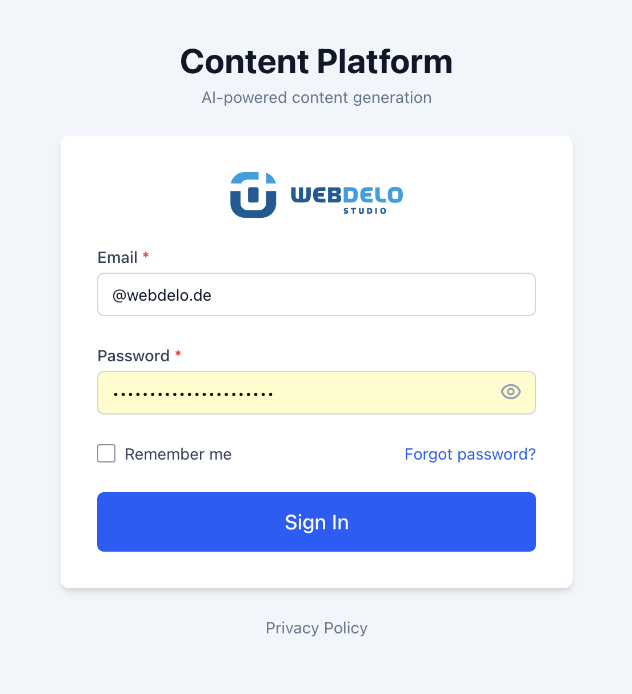
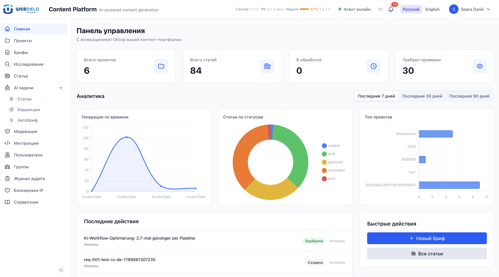

Internal keyword research engine for semantic core building, search-demand analysis, and content planning — powered by Google Ads API.


Generate keyword ideas and retrieve historical search volume data via Google Ads API — build data-driven semantic cores.
Analyze search query frequency trends. Identify rising and declining terms to prioritize content efforts.
Structure keyword clusters, group by intent, and export ready-to-use semantic cores for content production.
Retrieve available competition and bid-related indicators through the API to contextualize keyword opportunities.
Feed keyword data into Webdelo's content production pipeline — from research to published article.
All data stays within the Webdelo team. No external sharing, no public dashboards, no public or external customer access.
Google Ads data is accessed solely to perform internal keyword research, search-demand analysis, and content planning for Webdelo projects. The platform may use the API to:
The application requires login and password for all access. It is not publicly accessible — only authorized Webdelo personnel can enter. Permissions are managed internally. Google API data is processed only for legitimate internal business purposes.
We do not sell Google user data. Data obtained through Google APIs is used exclusively by authorized Webdelo team members for internal analysis and content planning. It is not sold, licensed, shared for advertising purposes, or made available to the public.
Leads the technical development and architecture of Webdelo's internal automation systems, including tools for keyword research, content production, and data analysis.